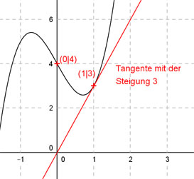

Aufgabe 68 Der Graph einer ganzrationalen Funktion 3. Grades hat im Punkt (1|3) die Steigung 3 und im Punkt (0|4) einen Wendepunkt. Wie lautet seine Funktionsgleichung?  Allgemeine Form einer ganzrationalen Funktion 3. Grades: f(x) = ax3 + bx2 + cx + d f’(x) = 3ax2 + 2bx + c f’’(x) = 6ax + 2b 4 Bedingungen: 1. Hat im Punkt (1|3) die Steigung 3 bedeutet zum einen: f(1) = 3 --> a * 13 + b * 12 + c * 1 + d = 3 --> a + b + c + d = 3 I 2. Hat im Punkt (1|3) die Steigung 3 bedeutet zum anderen: f’(1) = 3 --> 3a * 12 + 2b * 1 + c = 3 --> 3a + 2b + c = 3 II 3. Hat im Punkt (0|4) einen Wendepunkt bedeutet zum einen: f(0) = 4 --> a * 0³ + b * 0² + c * 0 + d = 4 --> d = 4 4. Hat im Punkt (0|4) einen Wendepunkt bedeutet zum anderen: f’’(0) = 0 --> 6a * 0 + 2b = 0 --> 2b = 0 |:2 --> b = 0 I * (-1) + II (b = 0 und d = 4 eingesetzt) -a - c - 4 = -3 3a + c = 3 ---------------- 2a - 4 = 0 |+4 2a = 4 |:2 a = 2 a = 2 und b = 0 und d = 4 in I eingesetzt: 2 + 0 + c + 4 = 3 6 + c = 3 |-6 c = -3 Gesuchte Funktionsgleichung: f(x) = 2x3 - 3x + 4